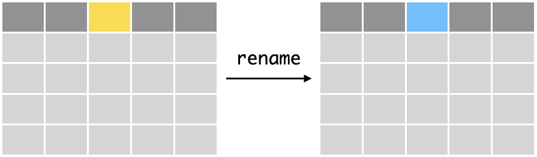
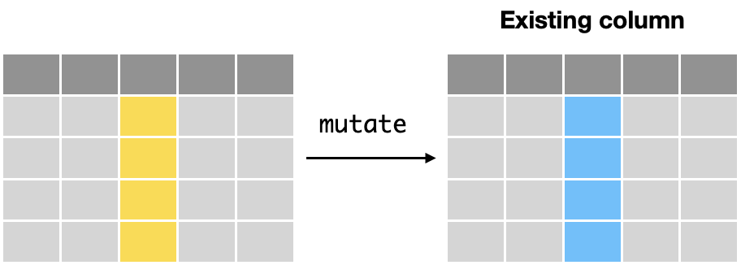
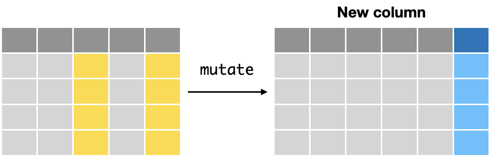
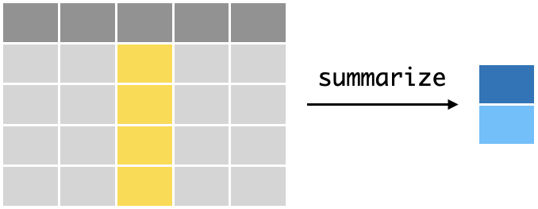
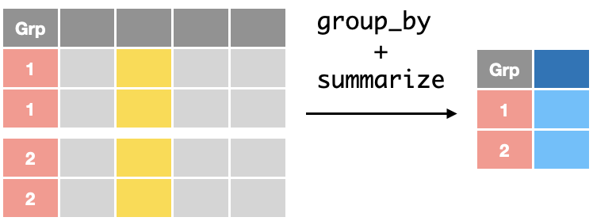

Transforming Data#
Data can be changed/transformed in several ways
Changing the
namesof columns/variablesChanging the
valuesand/orattributes (data types) of columnsCreating
newcolumns/variables
Data Preparation#
We will import a dataset from the Framingham study, which was a long term study of cardiovascular disease about subjects in Framingham, USA. In this dataset
~4000 subjects followed up and clinical data and chronic heart disease outcomes were examined longitudinally over > 10 years
The variables include
male: 0 = female, 1 = maleage: Age at the time of medical examination in years.education: 1 = Some high school, 2 = high school/GED, 3 = some college/vocational school, 4 = collegecurrentSmoker: Current cigarette smoking at the time of examinationscigsPerDay: Number of cigarettes smoked each dayBPmeds: Use of Anti-hypertensive medication at examprevalentStroke: Prevalent StrokeprevalentHyp: Prevalent Hypertensivediabetes: Diabetic according to criteria of first exam treatedtotChol: Total cholesterol (mg/dL)sysBP: Systolic Blood Pressure (mmHg)diaBP: Diastolic blood pressure (mmHg)BMI: Body Mass Index, weight (kg)/height (m)^2heartRate: Heart rate (beats/minute)glucose: Blood glucose level (mg/dL)
library(tidyverse)
# import data
data <- read_csv("https://raw.githubusercontent.com/kennethban/dataset/main/framingham.csv")
head(data)
── Attaching core tidyverse packages ───────────────────────────── tidyverse 2.0.0 ──
✔ dplyr 1.1.1 ✔ readr 2.1.4
✔ forcats 1.0.0 ✔ stringr 1.5.0
✔ ggplot2 3.4.2 ✔ tibble 3.2.1
✔ lubridate 1.9.2 ✔ tidyr 1.3.0
✔ purrr 1.0.1
── Conflicts ─────────────────────────────────────────────── tidyverse_conflicts() ──
✖ dplyr::filter() masks stats::filter()
✖ dplyr::lag() masks stats::lag()
ℹ Use the conflicted package (<http://conflicted.r-lib.org/>) to force all conflicts to become errors
Rows: 4240 Columns: 16
── Column specification ─────────────────────────────────────────────────────────────
Delimiter: ","
dbl (16): male, age, education, currentSmoker, cigsPerDay, BPMeds, prevalent...
ℹ Use `spec()` to retrieve the full column specification for this data.
ℹ Specify the column types or set `show_col_types = FALSE` to quiet this message.
| male | age | education | currentSmoker | cigsPerDay | BPMeds | prevalentStroke | prevalentHyp | diabetes | totChol | sysBP | diaBP | BMI | heartRate | glucose | TenYearCHD |
|---|---|---|---|---|---|---|---|---|---|---|---|---|---|---|---|
| <dbl> | <dbl> | <dbl> | <dbl> | <dbl> | <dbl> | <dbl> | <dbl> | <dbl> | <dbl> | <dbl> | <dbl> | <dbl> | <dbl> | <dbl> | <dbl> |
| 1 | 39 | 4 | 0 | 0 | 0 | 0 | 0 | 0 | 195 | 106.0 | 70 | 26.97 | 80 | 77 | 0 |
| 0 | 46 | 2 | 0 | 0 | 0 | 0 | 0 | 0 | 250 | 121.0 | 81 | 28.73 | 95 | 76 | 0 |
| 1 | 48 | 1 | 1 | 20 | 0 | 0 | 0 | 0 | 245 | 127.5 | 80 | 25.34 | 75 | 70 | 0 |
| 0 | 61 | 3 | 1 | 30 | 0 | 0 | 1 | 0 | 225 | 150.0 | 95 | 28.58 | 65 | 103 | 1 |
| 0 | 46 | 3 | 1 | 23 | 0 | 0 | 0 | 0 | 285 | 130.0 | 84 | 23.10 | 85 | 85 | 0 |
| 0 | 43 | 2 | 0 | 0 | 0 | 0 | 1 | 0 | 228 | 180.0 | 110 | 30.30 | 77 | 99 | 0 |
Renaming columns#
In some cases, we would like to rename columns for consistency/readability.
We can do this using the rename verb(function)
rename(new_name = original_name)

# renaming male column to sex
data %>%
rename(sex = male) %>%
head()
| sex | age | education | currentSmoker | cigsPerDay | BPMeds | prevalentStroke | prevalentHyp | diabetes | totChol | sysBP | diaBP | BMI | heartRate | glucose | TenYearCHD |
|---|---|---|---|---|---|---|---|---|---|---|---|---|---|---|---|
| <dbl> | <dbl> | <dbl> | <dbl> | <dbl> | <dbl> | <dbl> | <dbl> | <dbl> | <dbl> | <dbl> | <dbl> | <dbl> | <dbl> | <dbl> | <dbl> |
| 1 | 39 | 4 | 0 | 0 | 0 | 0 | 0 | 0 | 195 | 106.0 | 70 | 26.97 | 80 | 77 | 0 |
| 0 | 46 | 2 | 0 | 0 | 0 | 0 | 0 | 0 | 250 | 121.0 | 81 | 28.73 | 95 | 76 | 0 |
| 1 | 48 | 1 | 1 | 20 | 0 | 0 | 0 | 0 | 245 | 127.5 | 80 | 25.34 | 75 | 70 | 0 |
| 0 | 61 | 3 | 1 | 30 | 0 | 0 | 1 | 0 | 225 | 150.0 | 95 | 28.58 | 65 | 103 | 1 |
| 0 | 46 | 3 | 1 | 23 | 0 | 0 | 0 | 0 | 285 | 130.0 | 84 | 23.10 | 85 | 85 | 0 |
| 0 | 43 | 2 | 0 | 0 | 0 | 0 | 1 | 0 | 228 | 180.0 | 110 | 30.30 | 77 | 99 | 0 |
Let us inspect the data again
head(data)
| male | age | education | currentSmoker | cigsPerDay | BPMeds | prevalentStroke | prevalentHyp | diabetes | totChol | sysBP | diaBP | BMI | heartRate | glucose | TenYearCHD |
|---|---|---|---|---|---|---|---|---|---|---|---|---|---|---|---|
| <dbl> | <dbl> | <dbl> | <dbl> | <dbl> | <dbl> | <dbl> | <dbl> | <dbl> | <dbl> | <dbl> | <dbl> | <dbl> | <dbl> | <dbl> | <dbl> |
| 1 | 39 | 4 | 0 | 0 | 0 | 0 | 0 | 0 | 195 | 106.0 | 70 | 26.97 | 80 | 77 | 0 |
| 0 | 46 | 2 | 0 | 0 | 0 | 0 | 0 | 0 | 250 | 121.0 | 81 | 28.73 | 95 | 76 | 0 |
| 1 | 48 | 1 | 1 | 20 | 0 | 0 | 0 | 0 | 245 | 127.5 | 80 | 25.34 | 75 | 70 | 0 |
| 0 | 61 | 3 | 1 | 30 | 0 | 0 | 1 | 0 | 225 | 150.0 | 95 | 28.58 | 65 | 103 | 1 |
| 0 | 46 | 3 | 1 | 23 | 0 | 0 | 0 | 0 | 285 | 130.0 | 84 | 23.10 | 85 | 85 | 0 |
| 0 | 43 | 2 | 0 | 0 | 0 | 0 | 1 | 0 | 228 | 180.0 | 110 | 30.30 | 77 | 99 | 0 |
Wait a minute, what happened?
The original data remains the same because the change by
renamewas not saved as a variableTo save results from pipe operations, we assign it to a variable using the assignment operator
<-We can choose to save it to a different variable, or in this case, we will overwrite the original
datavariable
# overwrite data variable after change of name
data <- data %>% rename(sex = male)
There is no printout because it is saved into the data variable, overwriting its original content
We can inspect data again to confirm that the change was saved
head(data)
| sex | age | education | currentSmoker | cigsPerDay | BPMeds | prevalentStroke | prevalentHyp | diabetes | totChol | sysBP | diaBP | BMI | heartRate | glucose | TenYearCHD |
|---|---|---|---|---|---|---|---|---|---|---|---|---|---|---|---|
| <dbl> | <dbl> | <dbl> | <dbl> | <dbl> | <dbl> | <dbl> | <dbl> | <dbl> | <dbl> | <dbl> | <dbl> | <dbl> | <dbl> | <dbl> | <dbl> |
| 1 | 39 | 4 | 0 | 0 | 0 | 0 | 0 | 0 | 195 | 106.0 | 70 | 26.97 | 80 | 77 | 0 |
| 0 | 46 | 2 | 0 | 0 | 0 | 0 | 0 | 0 | 250 | 121.0 | 81 | 28.73 | 95 | 76 | 0 |
| 1 | 48 | 1 | 1 | 20 | 0 | 0 | 0 | 0 | 245 | 127.5 | 80 | 25.34 | 75 | 70 | 0 |
| 0 | 61 | 3 | 1 | 30 | 0 | 0 | 1 | 0 | 225 | 150.0 | 95 | 28.58 | 65 | 103 | 1 |
| 0 | 46 | 3 | 1 | 23 | 0 | 0 | 0 | 0 | 285 | 130.0 | 84 | 23.10 | 85 | 85 | 0 |
| 0 | 43 | 2 | 0 | 0 | 0 | 0 | 1 | 0 | 228 | 180.0 | 110 | 30.30 | 77 | 99 | 0 |
Changing values/attributes of a column#

We can change the values of a column using the
mutateverb(function) in combination with operations and/or functionsmutate(column1 = operation/function, column2 = operation/function,..)
The
mutatefunction can be used tochange data types
perform calculations
recode categorical variables
1. Data type#
Inspecting and changing the data type of columns is an important step after importing data
When data is imported, the data type is inferred from the values
The inferred data type may not be what we want
We will take a look at the data variable that contains the data imported by the read_csv function
head(data)
| sex | age | education | currentSmoker | cigsPerDay | BPMeds | prevalentStroke | prevalentHyp | diabetes | totChol | sysBP | diaBP | BMI | heartRate | glucose | TenYearCHD |
|---|---|---|---|---|---|---|---|---|---|---|---|---|---|---|---|
| <dbl> | <dbl> | <dbl> | <dbl> | <dbl> | <dbl> | <dbl> | <dbl> | <dbl> | <dbl> | <dbl> | <dbl> | <dbl> | <dbl> | <dbl> | <dbl> |
| 1 | 39 | 4 | 0 | 0 | 0 | 0 | 0 | 0 | 195 | 106.0 | 70 | 26.97 | 80 | 77 | 0 |
| 0 | 46 | 2 | 0 | 0 | 0 | 0 | 0 | 0 | 250 | 121.0 | 81 | 28.73 | 95 | 76 | 0 |
| 1 | 48 | 1 | 1 | 20 | 0 | 0 | 0 | 0 | 245 | 127.5 | 80 | 25.34 | 75 | 70 | 0 |
| 0 | 61 | 3 | 1 | 30 | 0 | 0 | 1 | 0 | 225 | 150.0 | 95 | 28.58 | 65 | 103 | 1 |
| 0 | 46 | 3 | 1 | 23 | 0 | 0 | 0 | 0 | 285 | 130.0 | 84 | 23.10 | 85 | 85 | 0 |
| 0 | 43 | 2 | 0 | 0 | 0 | 0 | 1 | 0 | 228 | 180.0 | 110 | 30.30 | 77 | 99 | 0 |
As the values in the columns are numbers, the read_csv function inferred that the values should be assigned a numeric data type (also known as dbl for double precision floating point)
Some of the columns are
categorical(e.g. male, education, currentSmoker) and will need to be converted to afactortypeSome of the columns contain whole numbers (e.g. cigsPerDay, heartRate) and would more appropriately assigned an
integertype
The data type have implications for analysis, in particular how categories are treated. If they are not converted to a factor type, frequencies of the categories cannot be calculated during analysis
We can illustrate this by using the function summary that prints out summary statistics for quantitative and categorical variables
summary(data)
sex age education currentSmoker
Min. :0.0000 Min. :32.00 Min. :1.000 Min. :0.0000
1st Qu.:0.0000 1st Qu.:42.00 1st Qu.:1.000 1st Qu.:0.0000
Median :0.0000 Median :49.00 Median :2.000 Median :0.0000
Mean :0.4292 Mean :49.58 Mean :1.979 Mean :0.4941
3rd Qu.:1.0000 3rd Qu.:56.00 3rd Qu.:3.000 3rd Qu.:1.0000
Max. :1.0000 Max. :70.00 Max. :4.000 Max. :1.0000
NA's :105
cigsPerDay BPMeds prevalentStroke prevalentHyp
Min. : 0.000 Min. :0.00000 Min. :0.000000 Min. :0.0000
1st Qu.: 0.000 1st Qu.:0.00000 1st Qu.:0.000000 1st Qu.:0.0000
Median : 0.000 Median :0.00000 Median :0.000000 Median :0.0000
Mean : 9.006 Mean :0.02962 Mean :0.005896 Mean :0.3106
3rd Qu.:20.000 3rd Qu.:0.00000 3rd Qu.:0.000000 3rd Qu.:1.0000
Max. :70.000 Max. :1.00000 Max. :1.000000 Max. :1.0000
NA's :29 NA's :53
diabetes totChol sysBP diaBP
Min. :0.00000 Min. :107.0 Min. : 83.5 Min. : 48.0
1st Qu.:0.00000 1st Qu.:206.0 1st Qu.:117.0 1st Qu.: 75.0
Median :0.00000 Median :234.0 Median :128.0 Median : 82.0
Mean :0.02571 Mean :236.7 Mean :132.4 Mean : 82.9
3rd Qu.:0.00000 3rd Qu.:263.0 3rd Qu.:144.0 3rd Qu.: 90.0
Max. :1.00000 Max. :696.0 Max. :295.0 Max. :142.5
NA's :50
BMI heartRate glucose TenYearCHD
Min. :15.54 Min. : 44.00 Min. : 40.00 Min. :0.0000
1st Qu.:23.07 1st Qu.: 68.00 1st Qu.: 71.00 1st Qu.:0.0000
Median :25.40 Median : 75.00 Median : 78.00 Median :0.0000
Mean :25.80 Mean : 75.88 Mean : 81.96 Mean :0.1519
3rd Qu.:28.04 3rd Qu.: 83.00 3rd Qu.: 87.00 3rd Qu.:0.0000
Max. :56.80 Max. :143.00 Max. :394.00 Max. :1.0000
NA's :19 NA's :1 NA's :388
Note that categories (eg. sex, education, TenYearCHD) are not reported properly as frequencies as they were assigned numeric data type
To do the data type conversions we can use data type coercion functions with mutate
mutate(column_name = as.numeric(column_name)mutate(column_name = as.integer(column_name)mutate(column_name = as.character(column_name)mutate(column_name = as.factor(column_name)mutate(column_name = as.logical(column_name)
# converting sex column to a factor
data <- data %>% mutate(sex = as.factor(sex))
head(data)
| sex | age | education | currentSmoker | cigsPerDay | BPMeds | prevalentStroke | prevalentHyp | diabetes | totChol | sysBP | diaBP | BMI | heartRate | glucose | TenYearCHD |
|---|---|---|---|---|---|---|---|---|---|---|---|---|---|---|---|
| <fct> | <dbl> | <dbl> | <dbl> | <dbl> | <dbl> | <dbl> | <dbl> | <dbl> | <dbl> | <dbl> | <dbl> | <dbl> | <dbl> | <dbl> | <dbl> |
| 1 | 39 | 4 | 0 | 0 | 0 | 0 | 0 | 0 | 195 | 106.0 | 70 | 26.97 | 80 | 77 | 0 |
| 0 | 46 | 2 | 0 | 0 | 0 | 0 | 0 | 0 | 250 | 121.0 | 81 | 28.73 | 95 | 76 | 0 |
| 1 | 48 | 1 | 1 | 20 | 0 | 0 | 0 | 0 | 245 | 127.5 | 80 | 25.34 | 75 | 70 | 0 |
| 0 | 61 | 3 | 1 | 30 | 0 | 0 | 1 | 0 | 225 | 150.0 | 95 | 28.58 | 65 | 103 | 1 |
| 0 | 46 | 3 | 1 | 23 | 0 | 0 | 0 | 0 | 285 | 130.0 | 84 | 23.10 | 85 | 85 | 0 |
| 0 | 43 | 2 | 0 | 0 | 0 | 0 | 1 | 0 | 228 | 180.0 | 110 | 30.30 | 77 | 99 | 0 |
We can also perform multiple conversions with mutate
# changing data type of multiple columns
data <- data %>% mutate(age = as.integer(age),
education = as.factor(education),
currentSmoker = as.factor(currentSmoker),
cigsPerDay = as.integer(cigsPerDay),
BPMeds = as.factor(BPMeds),
prevalentStroke = as.factor(prevalentStroke),
prevalentHyp = as.factor(prevalentHyp),
diabetes = as.factor(diabetes),
totChol = as.integer(totChol),
heartRate = as.integer(heartRate),
TenYearCHD = as.factor(TenYearCHD)
)
head(data)
| sex | age | education | currentSmoker | cigsPerDay | BPMeds | prevalentStroke | prevalentHyp | diabetes | totChol | sysBP | diaBP | BMI | heartRate | glucose | TenYearCHD |
|---|---|---|---|---|---|---|---|---|---|---|---|---|---|---|---|
| <fct> | <int> | <fct> | <fct> | <int> | <fct> | <fct> | <fct> | <fct> | <int> | <dbl> | <dbl> | <dbl> | <int> | <dbl> | <fct> |
| 1 | 39 | 4 | 0 | 0 | 0 | 0 | 0 | 0 | 195 | 106.0 | 70 | 26.97 | 80 | 77 | 0 |
| 0 | 46 | 2 | 0 | 0 | 0 | 0 | 0 | 0 | 250 | 121.0 | 81 | 28.73 | 95 | 76 | 0 |
| 1 | 48 | 1 | 1 | 20 | 0 | 0 | 0 | 0 | 245 | 127.5 | 80 | 25.34 | 75 | 70 | 0 |
| 0 | 61 | 3 | 1 | 30 | 0 | 0 | 1 | 0 | 225 | 150.0 | 95 | 28.58 | 65 | 103 | 1 |
| 0 | 46 | 3 | 1 | 23 | 0 | 0 | 0 | 0 | 285 | 130.0 | 84 | 23.10 | 85 | 85 | 0 |
| 0 | 43 | 2 | 0 | 0 | 0 | 0 | 1 | 0 | 228 | 180.0 | 110 | 30.30 | 77 | 99 | 0 |
We can run summary again to see how categorical data are treated
summary(data)
sex age education currentSmoker cigsPerDay
0:2420 Min. :32.00 1 :1720 0:2145 Min. : 0.000
1:1820 1st Qu.:42.00 2 :1253 1:2095 1st Qu.: 0.000
Median :49.00 3 : 689 Median : 0.000
Mean :49.58 4 : 473 Mean : 9.006
3rd Qu.:56.00 NA's: 105 3rd Qu.:20.000
Max. :70.00 Max. :70.000
NA's :29
BPMeds prevalentStroke prevalentHyp diabetes totChol
0 :4063 0:4215 0:2923 0:4131 Min. :107.0
1 : 124 1: 25 1:1317 1: 109 1st Qu.:206.0
NA's: 53 Median :234.0
Mean :236.7
3rd Qu.:263.0
Max. :696.0
NA's :50
sysBP diaBP BMI heartRate
Min. : 83.5 Min. : 48.0 Min. :15.54 Min. : 44.00
1st Qu.:117.0 1st Qu.: 75.0 1st Qu.:23.07 1st Qu.: 68.00
Median :128.0 Median : 82.0 Median :25.40 Median : 75.00
Mean :132.4 Mean : 82.9 Mean :25.80 Mean : 75.88
3rd Qu.:144.0 3rd Qu.: 90.0 3rd Qu.:28.04 3rd Qu.: 83.00
Max. :295.0 Max. :142.5 Max. :56.80 Max. :143.00
NA's :19 NA's :1
glucose TenYearCHD
Min. : 40.00 0:3596
1st Qu.: 71.00 1: 644
Median : 78.00
Mean : 81.96
3rd Qu.: 87.00
Max. :394.00
NA's :388
2. Calculations#
We can use mutate with mathematical operations and functions to perform calculations on column values
A common use case is to convert values in a column to a different units
# convert mg/dL to mmol/L then round to 1 decimal place
data <- data %>%
mutate(glucose = round(glucose/18, digits=1))
head(data)
| sex | age | education | currentSmoker | cigsPerDay | BPMeds | prevalentStroke | prevalentHyp | diabetes | totChol | sysBP | diaBP | BMI | heartRate | glucose | TenYearCHD |
|---|---|---|---|---|---|---|---|---|---|---|---|---|---|---|---|
| <fct> | <int> | <fct> | <fct> | <int> | <fct> | <fct> | <fct> | <fct> | <int> | <dbl> | <dbl> | <dbl> | <int> | <dbl> | <fct> |
| 1 | 39 | 4 | 0 | 0 | 0 | 0 | 0 | 0 | 195 | 106.0 | 70 | 26.97 | 80 | 4.3 | 0 |
| 0 | 46 | 2 | 0 | 0 | 0 | 0 | 0 | 0 | 250 | 121.0 | 81 | 28.73 | 95 | 4.2 | 0 |
| 1 | 48 | 1 | 1 | 20 | 0 | 0 | 0 | 0 | 245 | 127.5 | 80 | 25.34 | 75 | 3.9 | 0 |
| 0 | 61 | 3 | 1 | 30 | 0 | 0 | 1 | 0 | 225 | 150.0 | 95 | 28.58 | 65 | 5.7 | 1 |
| 0 | 46 | 3 | 1 | 23 | 0 | 0 | 0 | 0 | 285 | 130.0 | 84 | 23.10 | 85 | 4.7 | 0 |
| 0 | 43 | 2 | 0 | 0 | 0 | 0 | 1 | 0 | 228 | 180.0 | 110 | 30.30 | 77 | 5.5 | 0 |
3. Recoding#
Recoding one-to-one replacement
If we have categories/levels in factors that we want to recode with a one-to-one replacement, we can use the recode function together with mutate
mutate(column_name = recode(column name,
old_code1 = new_code1,
old_code2 = new_code2,
...)
# recoding 0/1 to F/M in sex column
data <- data %>%
mutate(sex = recode(sex, "0" = "F",
"1" = "M" ))
head(data)
| sex | age | education | currentSmoker | cigsPerDay | BPMeds | prevalentStroke | prevalentHyp | diabetes | totChol | sysBP | diaBP | BMI | heartRate | glucose | TenYearCHD |
|---|---|---|---|---|---|---|---|---|---|---|---|---|---|---|---|
| <fct> | <int> | <fct> | <fct> | <int> | <fct> | <fct> | <fct> | <fct> | <int> | <dbl> | <dbl> | <dbl> | <int> | <dbl> | <fct> |
| M | 39 | 4 | 0 | 0 | 0 | 0 | 0 | 0 | 195 | 106.0 | 70 | 26.97 | 80 | 4.3 | 0 |
| F | 46 | 2 | 0 | 0 | 0 | 0 | 0 | 0 | 250 | 121.0 | 81 | 28.73 | 95 | 4.2 | 0 |
| M | 48 | 1 | 1 | 20 | 0 | 0 | 0 | 0 | 245 | 127.5 | 80 | 25.34 | 75 | 3.9 | 0 |
| F | 61 | 3 | 1 | 30 | 0 | 0 | 1 | 0 | 225 | 150.0 | 95 | 28.58 | 65 | 5.7 | 1 |
| F | 46 | 3 | 1 | 23 | 0 | 0 | 0 | 0 | 285 | 130.0 | 84 | 23.10 | 85 | 4.7 | 0 |
| F | 43 | 2 | 0 | 0 | 0 | 0 | 1 | 0 | 228 | 180.0 | 110 | 30.30 | 77 | 5.5 | 0 |
Recoding based on conditions
In cases where we need to include conditions for recoding, we use the case_when function with mutate.
For each condition, we specify the conditional statement on the left hand side (
LHS) and the recoded value on the right hand side (RHS) asLHS ~ RHS
mutate(column_name = case_when(condition1 ~ code1,
condition2 ~ code2,
...)
# using case_when to recode numeric values to categories in new column
data <- data %>%
mutate(ageCat = case_when(
age < 65 ~ "adult",
age >= 65 ~ "senior"))
data %>% sample_n(10)
| sex | age | education | currentSmoker | cigsPerDay | BPMeds | prevalentStroke | prevalentHyp | diabetes | totChol | sysBP | diaBP | BMI | heartRate | glucose | TenYearCHD | ageCat |
|---|---|---|---|---|---|---|---|---|---|---|---|---|---|---|---|---|
| <fct> | <int> | <fct> | <fct> | <int> | <fct> | <fct> | <fct> | <fct> | <int> | <dbl> | <dbl> | <dbl> | <int> | <dbl> | <fct> | <chr> |
| F | 42 | 1 | 0 | 0 | 0 | 0 | 0 | 0 | 179 | 115.0 | 78 | 25.75 | 80 | 4.3 | 0 | adult |
| M | 41 | 1 | 1 | 15 | NA | 0 | 0 | 0 | 198 | 114.5 | 80 | 22.53 | 72 | 4.2 | 0 | adult |
| F | 47 | 1 | 1 | 9 | 0 | 0 | 0 | 0 | 214 | 118.0 | 72 | 24.08 | 60 | NA | 0 | adult |
| M | 45 | 1 | 0 | 0 | 0 | 0 | 0 | 0 | 213 | 130.0 | 80 | 27.25 | 68 | 4.2 | 0 | adult |
| F | 49 | 1 | 1 | 20 | 0 | 0 | 0 | 0 | 323 | 123.5 | 78 | 22.86 | 92 | 3.5 | 1 | adult |
| M | 50 | 4 | 1 | 9 | NA | 0 | 0 | 0 | 296 | 119.0 | 90 | 23.55 | 75 | 3.8 | 1 | adult |
| F | 41 | 2 | 0 | 0 | 0 | 0 | 0 | 0 | 187 | 108.0 | 64 | 23.63 | 72 | 3.9 | 0 | adult |
| M | 54 | 1 | 0 | 0 | 0 | 0 | 0 | 0 | 254 | 136.5 | 83 | 20.55 | 88 | 5.3 | 0 | adult |
| M | 59 | 2 | 0 | 0 | 0 | 0 | 1 | 0 | 237 | 153.5 | 85 | 28.45 | 51 | NA | 0 | adult |
| M | 41 | 2 | 0 | 0 | 0 | 0 | 1 | 0 | 248 | 140.0 | 87 | 30.34 | 96 | NA | 0 | adult |
Note that by default, case_when treats labels as character data types, hence the ageCat column type reflects this
If we run
summaryon the data, we can see that the frequencies of the categories are not reported
summary(data)
sex age education currentSmoker cigsPerDay
F:2420 Min. :32.00 1 :1720 0:2145 Min. : 0.000
M:1820 1st Qu.:42.00 2 :1253 1:2095 1st Qu.: 0.000
Median :49.00 3 : 689 Median : 0.000
Mean :49.58 4 : 473 Mean : 9.006
3rd Qu.:56.00 NA's: 105 3rd Qu.:20.000
Max. :70.00 Max. :70.000
NA's :29
BPMeds prevalentStroke prevalentHyp diabetes totChol
0 :4063 0:4215 0:2923 0:4131 Min. :107.0
1 : 124 1: 25 1:1317 1: 109 1st Qu.:206.0
NA's: 53 Median :234.0
Mean :236.7
3rd Qu.:263.0
Max. :696.0
NA's :50
sysBP diaBP BMI heartRate
Min. : 83.5 Min. : 48.0 Min. :15.54 Min. : 44.00
1st Qu.:117.0 1st Qu.: 75.0 1st Qu.:23.07 1st Qu.: 68.00
Median :128.0 Median : 82.0 Median :25.40 Median : 75.00
Mean :132.4 Mean : 82.9 Mean :25.80 Mean : 75.88
3rd Qu.:144.0 3rd Qu.: 90.0 3rd Qu.:28.04 3rd Qu.: 83.00
Max. :295.0 Max. :142.5 Max. :56.80 Max. :143.00
NA's :19 NA's :1
glucose TenYearCHD ageCat
Min. : 2.200 0:3596 Length:4240
1st Qu.: 3.900 1: 644 Class :character
Median : 4.300 Mode :character
Mean : 4.554
3rd Qu.: 4.800
Max. :21.900
NA's :388
We would need to explicitly mutate the recoded column as a factor after recoding to a categorial label
After doing this, the
summaryfunction reports the frequencies of the categories correctly
data <- data %>% mutate(ageCat = as.factor(ageCat))
summary(data)
sex age education currentSmoker cigsPerDay
F:2420 Min. :32.00 1 :1720 0:2145 Min. : 0.000
M:1820 1st Qu.:42.00 2 :1253 1:2095 1st Qu.: 0.000
Median :49.00 3 : 689 Median : 0.000
Mean :49.58 4 : 473 Mean : 9.006
3rd Qu.:56.00 NA's: 105 3rd Qu.:20.000
Max. :70.00 Max. :70.000
NA's :29
BPMeds prevalentStroke prevalentHyp diabetes totChol
0 :4063 0:4215 0:2923 0:4131 Min. :107.0
1 : 124 1: 25 1:1317 1: 109 1st Qu.:206.0
NA's: 53 Median :234.0
Mean :236.7
3rd Qu.:263.0
Max. :696.0
NA's :50
sysBP diaBP BMI heartRate
Min. : 83.5 Min. : 48.0 Min. :15.54 Min. : 44.00
1st Qu.:117.0 1st Qu.: 75.0 1st Qu.:23.07 1st Qu.: 68.00
Median :128.0 Median : 82.0 Median :25.40 Median : 75.00
Mean :132.4 Mean : 82.9 Mean :25.80 Mean : 75.88
3rd Qu.:144.0 3rd Qu.: 90.0 3rd Qu.:28.04 3rd Qu.: 83.00
Max. :295.0 Max. :142.5 Max. :56.80 Max. :143.00
NA's :19 NA's :1
glucose TenYearCHD ageCat
Min. : 2.200 0:3596 adult :4073
1st Qu.: 3.900 1: 644 senior: 167
Median : 4.300
Mean : 4.554
3rd Qu.: 4.800
Max. :21.900
NA's :388
Note that the factors are listed in alphabetical order. If this is not what we want, we can use the fct_relevel function with mutate to specify the order of the factors
mutate(column_name = fct_relevel(column_name, level1, level2,..))
# overriding the alphabetical ordering of factor levels (F,M to M,F)
data <- data %>%
mutate(sex = fct_relevel(sex, "M","F"))
summary(data)
sex age education currentSmoker cigsPerDay
M:1820 Min. :32.00 1 :1720 0:2145 Min. : 0.000
F:2420 1st Qu.:42.00 2 :1253 1:2095 1st Qu.: 0.000
Median :49.00 3 : 689 Median : 0.000
Mean :49.58 4 : 473 Mean : 9.006
3rd Qu.:56.00 NA's: 105 3rd Qu.:20.000
Max. :70.00 Max. :70.000
NA's :29
BPMeds prevalentStroke prevalentHyp diabetes totChol
0 :4063 0:4215 0:2923 0:4131 Min. :107.0
1 : 124 1: 25 1:1317 1: 109 1st Qu.:206.0
NA's: 53 Median :234.0
Mean :236.7
3rd Qu.:263.0
Max. :696.0
NA's :50
sysBP diaBP BMI heartRate
Min. : 83.5 Min. : 48.0 Min. :15.54 Min. : 44.00
1st Qu.:117.0 1st Qu.: 75.0 1st Qu.:23.07 1st Qu.: 68.00
Median :128.0 Median : 82.0 Median :25.40 Median : 75.00
Mean :132.4 Mean : 82.9 Mean :25.80 Mean : 75.88
3rd Qu.:144.0 3rd Qu.: 90.0 3rd Qu.:28.04 3rd Qu.: 83.00
Max. :295.0 Max. :142.5 Max. :56.80 Max. :143.00
NA's :19 NA's :1
glucose TenYearCHD ageCat
Min. : 2.200 0:3596 adult :4073
1st Qu.: 3.900 1: 644 senior: 167
Median : 4.300
Mean : 4.554
3rd Qu.: 4.800
Max. :21.900
NA's :388
Now we see that the levels for sex are listed as M,F instead of the default alphabetical order F, M
Recommendation for recoding to factor variables#
Check that the recoded column is a
factordata type and notcharacterConvert to
factorif necessaryPerform
fct_relevelif you wish to change the order
These steps can be chained together with pipes
mutate(column_name = case_when(
condition1 ~ "label1",
condition2 ~ "label2",
...)) %>%
mutate(column_name = as.factor(column_name)) %>%
mutate(column_name = fct_relevel(column_name, "label1","label2",..))
Creating a new column from different variables#
In some cases, we would like to create a new column that incorporates a calculation using values from other columns.
An example would be the calculation of BMI from weight and height
mutate(BMI = weight/height^2)

# create new column called pulsePre
# calculate difference between systolic and diastolic BP
data <- data %>%
mutate(pulsePres = sysBP - diaBP)
head(data)
| sex | age | education | currentSmoker | cigsPerDay | BPMeds | prevalentStroke | prevalentHyp | diabetes | totChol | sysBP | diaBP | BMI | heartRate | glucose | TenYearCHD | ageCat | pulsePres |
|---|---|---|---|---|---|---|---|---|---|---|---|---|---|---|---|---|---|
| <fct> | <int> | <fct> | <fct> | <int> | <fct> | <fct> | <fct> | <fct> | <int> | <dbl> | <dbl> | <dbl> | <int> | <dbl> | <fct> | <fct> | <dbl> |
| M | 39 | 4 | 0 | 0 | 0 | 0 | 0 | 0 | 195 | 106.0 | 70 | 26.97 | 80 | 4.3 | 0 | adult | 36.0 |
| F | 46 | 2 | 0 | 0 | 0 | 0 | 0 | 0 | 250 | 121.0 | 81 | 28.73 | 95 | 4.2 | 0 | adult | 40.0 |
| M | 48 | 1 | 1 | 20 | 0 | 0 | 0 | 0 | 245 | 127.5 | 80 | 25.34 | 75 | 3.9 | 0 | adult | 47.5 |
| F | 61 | 3 | 1 | 30 | 0 | 0 | 1 | 0 | 225 | 150.0 | 95 | 28.58 | 65 | 5.7 | 1 | adult | 55.0 |
| F | 46 | 3 | 1 | 23 | 0 | 0 | 0 | 0 | 285 | 130.0 | 84 | 23.10 | 85 | 4.7 | 0 | adult | 46.0 |
| F | 43 | 2 | 0 | 0 | 0 | 0 | 1 | 0 | 228 | 180.0 | 110 | 30.30 | 77 | 5.5 | 0 | adult | 70.0 |
Summarizing data#

The summarize function can be applied to a column, using any function that can return a summary value from a vector
summarize(summary_name1 = function1(column_to_summarize),
summary_name2 = function2(column_to_summarize),
...)
)
The summarize function returns a tibble with the summary names as the column names
# summarize using functions that take a vector from a column and return a value
data %>% summarise(n = n(), # number of rows/cases
min_age = min(age), # minimum
max_age = max(age), # maximum
mean_age = mean(age)) # average
| n | min_age | max_age | mean_age |
|---|---|---|---|
| <int> | <int> | <int> | <dbl> |
| 4240 | 32 | 70 | 49.58019 |
Data can be grouped before summarizing#

We use the group_by function to specify how the data should be grouped by a category before summarize is applied to each group
This is useful for showing summary statistics for each group
# summary can be be grouped by any column that is categorical
data %>%
group_by(ageCat) %>%
summarise(mean_age = mean(age)) # the mean age is calculate for each ageCat category
| ageCat | mean_age |
|---|---|
| <fct> | <dbl> |
| adult | 48.89394 |
| senior | 66.31737 |
# multiple summary variables can be included using functions that accept vectors
data %>%
group_by(ageCat) %>%
summarise(num = n(), # number of rows/cases
mean_age = mean(age))
| ageCat | num | mean_age |
|---|---|---|
| <fct> | <int> | <dbl> |
| adult | 4073 | 48.89394 |
| senior | 167 | 66.31737 |
# data can be grouped by multiple columns
data %>%
group_by(ageCat, diabetes) %>%
summarise(num = n(),
mean_age = mean(age),
median_age = median(age))
`summarise()` has grouped output by 'ageCat'. You can override using the `.groups`
argument.
| ageCat | diabetes | num | mean_age | median_age |
|---|---|---|---|---|
| <fct> | <fct> | <int> | <dbl> | <dbl> |
| adult | 0 | 3975 | 48.77585 | 48 |
| adult | 1 | 98 | 53.68367 | 54 |
| senior | 0 | 156 | 66.33974 | 66 |
| senior | 1 | 11 | 66.00000 | 66 |
# factors can be re-ordered to change the output as desired
data %>%
mutate(diabetes = fct_relevel(diabetes, c("1","0"))) %>%
group_by(ageCat, diabetes) %>%
summarise(num = n(),
mean_age = mean(age),
median_age = median(age))
`summarise()` has grouped output by 'ageCat'. You can override using the `.groups`
argument.
| ageCat | diabetes | num | mean_age | median_age |
|---|---|---|---|---|
| <fct> | <fct> | <int> | <dbl> | <dbl> |
| adult | 1 | 98 | 53.68367 | 54 |
| adult | 0 | 3975 | 48.77585 | 48 |
| senior | 1 | 11 | 66.00000 | 66 |
| senior | 0 | 156 | 66.33974 | 66 |
Exercise - Transforming Data#
We will use the same Framingham heart study dataset
library(tidyverse)
# import data
data <- read_csv("https://raw.githubusercontent.com/kennethban/dataset/main/framingham.csv")
# A recap of what we did
data <- data %>%
rename(sex = male) %>% # renaming
mutate(glucose = round(glucose/18, digits=1)) %>% # calculating
mutate(age = as.integer(age), # change data type
sex = as.factor(sex),
education = as.factor(education),
currentSmoker = as.factor(currentSmoker),
cigsPerDay = as.integer(cigsPerDay),
BPMeds = as.factor(BPMeds),
prevalentStroke = as.factor(prevalentStroke),
prevalentHyp = as.factor(prevalentHyp),
diabetes = as.factor(diabetes),
totChol = as.integer(totChol),
heartRate = as.integer(heartRate),
TenYearCHD = as.factor(TenYearCHD)
) %>%
mutate(sex = recode(sex, "0" = "F", # recoding
"1" = "M" )) %>%
mutate(ageCat = case_when( # recoding new column with conditions
age < 65 ~ "adult",
age >= 65 ~ "senior")) %>%
mutate(ageCat = as.factor(ageCat)) %>% # change data type
mutate(sex = fct_relevel(sex, "M","F")) %>% # order of levels
mutate(pulsePres = sysBP - diaBP) # create new column from other variables
head(data)
Rows: 4240 Columns: 16
── Column specification ─────────────────────────────────────────────────────────────
Delimiter: ","
dbl (16): male, age, education, currentSmoker, cigsPerDay, BPMeds, prevalent...
ℹ Use `spec()` to retrieve the full column specification for this data.
ℹ Specify the column types or set `show_col_types = FALSE` to quiet this message.
| sex | age | education | currentSmoker | cigsPerDay | BPMeds | prevalentStroke | prevalentHyp | diabetes | totChol | sysBP | diaBP | BMI | heartRate | glucose | TenYearCHD | ageCat | pulsePres |
|---|---|---|---|---|---|---|---|---|---|---|---|---|---|---|---|---|---|
| <fct> | <int> | <fct> | <fct> | <int> | <fct> | <fct> | <fct> | <fct> | <int> | <dbl> | <dbl> | <dbl> | <int> | <dbl> | <fct> | <fct> | <dbl> |
| M | 39 | 4 | 0 | 0 | 0 | 0 | 0 | 0 | 195 | 106.0 | 70 | 26.97 | 80 | 4.3 | 0 | adult | 36.0 |
| F | 46 | 2 | 0 | 0 | 0 | 0 | 0 | 0 | 250 | 121.0 | 81 | 28.73 | 95 | 4.2 | 0 | adult | 40.0 |
| M | 48 | 1 | 1 | 20 | 0 | 0 | 0 | 0 | 245 | 127.5 | 80 | 25.34 | 75 | 3.9 | 0 | adult | 47.5 |
| F | 61 | 3 | 1 | 30 | 0 | 0 | 1 | 0 | 225 | 150.0 | 95 | 28.58 | 65 | 5.7 | 1 | adult | 55.0 |
| F | 46 | 3 | 1 | 23 | 0 | 0 | 0 | 0 | 285 | 130.0 | 84 | 23.10 | 85 | 4.7 | 0 | adult | 46.0 |
| F | 43 | 2 | 0 | 0 | 0 | 0 | 1 | 0 | 228 | 180.0 | 110 | 30.30 | 77 | 5.5 | 0 | adult | 70.0 |
Part 1#
Recode the BMI to these categories as weightCat
less than 18 : underweight
greater/equal to 18 and lesser/equal to 25: normal
greater than 25 and lesser/equal to 30: overweight
greater than 30: obese
Convert them to factors and store them in data2
# start here
Show code cell content
# solution
data2 <- data %>%
mutate(weightCat = case_when(BMI < 18 ~ "underweight",
BMI >= 18 & BMI <= 25 ~ "normal",
BMI > 25 & BMI <= 30 ~ "overweight",
BMI > 30 ~ "obese"
)) %>%
mutate(weightCat = as.factor(weightCat))
Show code cell content
# check here
head(data2)
| sex | age | education | currentSmoker | cigsPerDay | BPMeds | prevalentStroke | prevalentHyp | diabetes | totChol | sysBP | diaBP | BMI | heartRate | glucose | TenYearCHD | ageCat | pulsePres | weightCat |
|---|---|---|---|---|---|---|---|---|---|---|---|---|---|---|---|---|---|---|
| <fct> | <int> | <fct> | <fct> | <int> | <fct> | <fct> | <fct> | <fct> | <int> | <dbl> | <dbl> | <dbl> | <int> | <dbl> | <fct> | <fct> | <dbl> | <fct> |
| M | 39 | 4 | 0 | 0 | 0 | 0 | 0 | 0 | 195 | 106.0 | 70 | 26.97 | 80 | 4.3 | 0 | adult | 36.0 | overweight |
| F | 46 | 2 | 0 | 0 | 0 | 0 | 0 | 0 | 250 | 121.0 | 81 | 28.73 | 95 | 4.2 | 0 | adult | 40.0 | overweight |
| M | 48 | 1 | 1 | 20 | 0 | 0 | 0 | 0 | 245 | 127.5 | 80 | 25.34 | 75 | 3.9 | 0 | adult | 47.5 | overweight |
| F | 61 | 3 | 1 | 30 | 0 | 0 | 1 | 0 | 225 | 150.0 | 95 | 28.58 | 65 | 5.7 | 1 | adult | 55.0 | overweight |
| F | 46 | 3 | 1 | 23 | 0 | 0 | 0 | 0 | 285 | 130.0 | 84 | 23.10 | 85 | 4.7 | 0 | adult | 46.0 | normal |
| F | 43 | 2 | 0 | 0 | 0 | 0 | 1 | 0 | 228 | 180.0 | 110 | 30.30 | 77 | 5.5 | 0 | adult | 70.0 | obese |
Part 2#
Using data2 convert totChol to mmol/L (rounded to 1 digit) and update data2
# start here
Show code cell content
# solution
data2 <- data2 %>%
mutate(totChol = round(totChol/38, digits = 1))
Show code cell content
# check here
head(data2)
| sex | age | education | currentSmoker | cigsPerDay | BPMeds | prevalentStroke | prevalentHyp | diabetes | totChol | sysBP | diaBP | BMI | heartRate | glucose | TenYearCHD | ageCat | pulsePres | weightCat |
|---|---|---|---|---|---|---|---|---|---|---|---|---|---|---|---|---|---|---|
| <fct> | <int> | <fct> | <fct> | <int> | <fct> | <fct> | <fct> | <fct> | <dbl> | <dbl> | <dbl> | <dbl> | <int> | <dbl> | <fct> | <fct> | <dbl> | <fct> |
| M | 39 | 4 | 0 | 0 | 0 | 0 | 0 | 0 | 5.1 | 106.0 | 70 | 26.97 | 80 | 4.3 | 0 | adult | 36.0 | overweight |
| F | 46 | 2 | 0 | 0 | 0 | 0 | 0 | 0 | 6.6 | 121.0 | 81 | 28.73 | 95 | 4.2 | 0 | adult | 40.0 | overweight |
| M | 48 | 1 | 1 | 20 | 0 | 0 | 0 | 0 | 6.4 | 127.5 | 80 | 25.34 | 75 | 3.9 | 0 | adult | 47.5 | overweight |
| F | 61 | 3 | 1 | 30 | 0 | 0 | 1 | 0 | 5.9 | 150.0 | 95 | 28.58 | 65 | 5.7 | 1 | adult | 55.0 | overweight |
| F | 46 | 3 | 1 | 23 | 0 | 0 | 0 | 0 | 7.5 | 130.0 | 84 | 23.10 | 85 | 4.7 | 0 | adult | 46.0 | normal |
| F | 43 | 2 | 0 | 0 | 0 | 0 | 1 | 0 | 6.0 | 180.0 | 110 | 30.30 | 77 | 5.5 | 0 | adult | 70.0 | obese |
Part 3#
Using data2
Remove rows with NA values in
weightCatandtotCholSummarize the number of patients and the mean
totChollevels byweightCat
# start here
Show code cell content
# solution
data2 %>%
drop_na(weightCat, totChol) %>%
group_by(weightCat) %>%
summarize(n = n(),
mean_chol = mean(totChol))
| weightCat | n | mean_chol |
|---|---|---|
| <fct> | <int> | <dbl> |
| normal | 1875 | 6.081813 |
| obese | 526 | 6.358365 |
| overweight | 1738 | 6.365247 |
| underweight | 33 | 5.521212 |
Part 4#
Using data2
Change the order of the weightCat to correspond to the increase in BMI,
Remove rows with NA values in
weightCat,glucose,totCholSummarize by weightCat
number of patients
mean glucose
mean totChol
# start here
Show code cell content
# solution
data2 %>%
mutate(weightCat = fct_relevel(weightCat,
"underweight",
"normal",
"overweight",
"obese")) %>%
drop_na(weightCat, glucose, totChol) %>%
group_by(weightCat) %>%
summarize(n = n(),
mean_glucose = mean(glucose),
mean_chol = mean(totChol))
| weightCat | n | mean_glucose | mean_chol |
|---|---|---|---|
| <fct> | <int> | <dbl> | <dbl> |
| underweight | 31 | 4.525806 | 5.490323 |
| normal | 1712 | 4.461332 | 6.097313 |
| overweight | 1606 | 4.582005 | 6.367435 |
| obese | 479 | 4.770146 | 6.350313 |